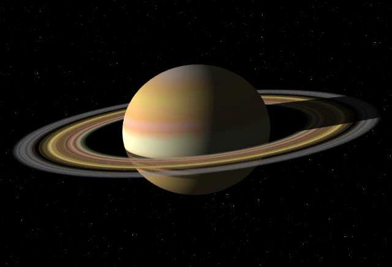

Planet
KITE YOU CAN KNOW ABOUT SOLAR SYSTEM !

Mars or Mars (Chinese: 火星, English: Mars) is the fourth planet from the Sun. Mars is the second smallest planet in the Solar System, just larger than Mercury. Mars is a rocky planet with a thin atmosphere, with as many impact craters, volcanoes, valleys, deserts, and ice caps on the surface as there are on Earth. Mars is often referred to as the "Red Planet" because the planet's surface contains a lot of iron(III) oxide with an orange-red color.[16] Day lengths and seasons and on Mars are relatively similar to those of Earth, as Mars orbits itself in 24.5 hours and both planets have tilted rotational axes. On the surface of Mars, there is Olympus Mons as the highest mountain and Valles Marineris (like a long slit) is the longest canyon in the Solar System. In the northern hemisphere, the surface of Mars is unusually flat, covering up to 40% of the planet's surface and is known as the Borealis Basin. The two natural moons of Mars are named Phobos and Deimos; they have a distorted shape and small size compared to other satellites.[17][18]

Saturn (Saturn) or Saturn (Chinese: 土星) is the sixth planet by average distance from the Sun and the second largest planet in diameter and mass, after Jupiter in the Solar System. . The English name of the planet is named after the Roman god Saturn, the planet's astronomical symbol is (♄) representing the god's sickle. Saturn is a gas giant with an average radius 9 times that of Earth. [14][15] Although the planet's mass is 95 times that of Earth, with a volume 763 times larger, Saturn's average density is only one-eighth that of Earth's.[16][17][ 18] Saturn's internal structure probably consists of a core of iron, nickel, and rock (compounds of silicon and oxygen), surrounded by a thick layer of metallic hydrogen, an intermediate layer between liquid hydrogen and liquid helium and an atmosphere. at the top.[19] The planet's pale yellow color is due to the presence of ammonia crystals in the upper atmosphere. Electric currents within the metallic hydrogen are responsible for the fact that Saturn has a planetary magnetic field with a magnitude slightly weaker than that of Earth and one-twelfth that of Jupiter.[20 ] The planet's upper atmosphere is uniform in color and appears calm compared to Jupiter's turbulent atmosphere, although it also has strong storms. Wind speeds on Saturn can reach 1,800 km/h, faster than on Jupiter, but not as fast as those on Neptune.

Uranus (Uranus) or Uranus (Chinese: 天王星) is the seventh planet from the Sun; It is the third largest radius and fourth most massive planet in the Solar System. Uranus has a similar composition to Neptune. Both have different chemical compositions than the two larger gas giants, Jupiter and Saturn. So astronomers sometimes include these planets in the list of "ice giants". The atmosphere of Uranus is similar to that of Jupiter and Saturn in basic composition such as hydrogen and helium. The other is that they contain many volatile compounds such as water, ammonia and methane along with small amounts of hydrocarbons.[9] This planet has the coldest atmosphere of any of the planets in the Solar System, with a minimum temperature of 49 K (−224 °C). It has a complex cloud layer structure. It is likely that the lowest clouds contain mainly water while methane predominates in the upper clouds.[9] In contrast, the structure inside Uranus consists mainly of a core of ice and rock.[8] Like other gas giants, Uranus has a ring system, magnetosphere, and numerous natural satellites. The Uranus system has a unique structure because its axis of rotation is strongly tilted, almost parallel to the plane of the planet's orbit. Thus the north and south poles of this planet are located roughly at the equator compared to other planets.[14] In 1986, images taken by the Voyager 2 spacecraft showed Uranus in visible light appearing in an almost uniform color without the bands of clouds or storms like other gas giants.[ 14] Astronomers making observations from the ground have detected signs of seasonal changes and an increase in weather activity in recent years as it approaches the equinox in its orbit. Wind speeds on Uranus reach 250 meters per second (900 km/h).

Neptune or Neptune (Chinese: 海王星) is the eighth and farthest planet from the Sun in the Solar System. It is the fourth largest planet in diameter and the third largest by mass . Neptune has the largest density of any gaseous planets in the solar system. Neptune has 17 times the mass of Earth and is slightly more massive than Uranus (approximately 15 times that of Earth).[11] Neptune orbits the Sun at an average distance of 30.1 AU, about 30 times the Earth-Sun distance. Neptune is named after the Roman god of the sea (Neptune). It has the astronomical symbol ♆, which is a stylized symbol of Neptune's trident or the Greek letter psi. Neptune was the first planet found by theoretical calculations. Based on the unusual perturbation of the orbit of Uranus, astronomer Alexis Bouvard concluded that its orbit is perturbed due to gravitational interactions with a certain planet. On September 23, 1846,[1] astronomer Johann Galle discovered Neptune at a position 1 degree away from Urbain Le Verrier's prediction. Shortly after, Triton was also discovered, Neptune's largest moon, while its remaining 13 moons were discovered only in the twentieth century. To date, the Voyager 2 spacecraft is the only spacecraft to fly by Neptune on August 25, 1989.
Categories
Tags
LATEST POSTS
HOW MANY GALAXIES ARE IN THE KNOWN UNIVERSE?
There are close to 170 billion, or recent research estimates, 2 billion billion galaxies in the observable universe. The numbers are between 1,000 and 100,000 parsecs in diameter, and the two neighboring galaxies are often several million parsecs (or megaparsecs) apart.
CLOUDY WEATHER ON TITAN IS MADE OF METHANE
Fusce vel mauris vel nulla pellentesque egestas. In vestibulum risus nec nisi...
IS THE EARTH THE CENTER OF THE CELESTIAL SYSTEM?
The position of the Earth is only an insignificant part of the universe, despite recent theories that topple the foundations of modern cosmology, according to a University of British Columbia research team. The book On the Revolutions of the Heavenly Spheres by the Polish astronomer Nicolaus Copernicus, in 1543, changed the concept from Earth as the center of the universe to Earth as just a planet orbiting the sun. Since then, generations of astronomers have expanded on this idea and formulated the Copenic Theory, which holds that our Earth in the universe is just a perfectly normal planet. Although the Copenic Theory has become the cornerstone of modern cosmology, finding evidence that the Earth is a non-specific part of the Universe has proved quite difficult. In 1998, studies of cosmic explosions called "type Ia supernovae" showed that the expansion of the universe was accelerating, caused by the repulsion of a mysterious "dark energy" source. However, some scientists have put forward a different theory, stating that the Earth is located near the center of a giant "bubble" that is mostly devoid of matter, and goes against the Copenic Theory. Thereby, gravity would create the illusion of rapid expansion, similar to the effect of dark energy on supernova observations.
OTHER PLANETS